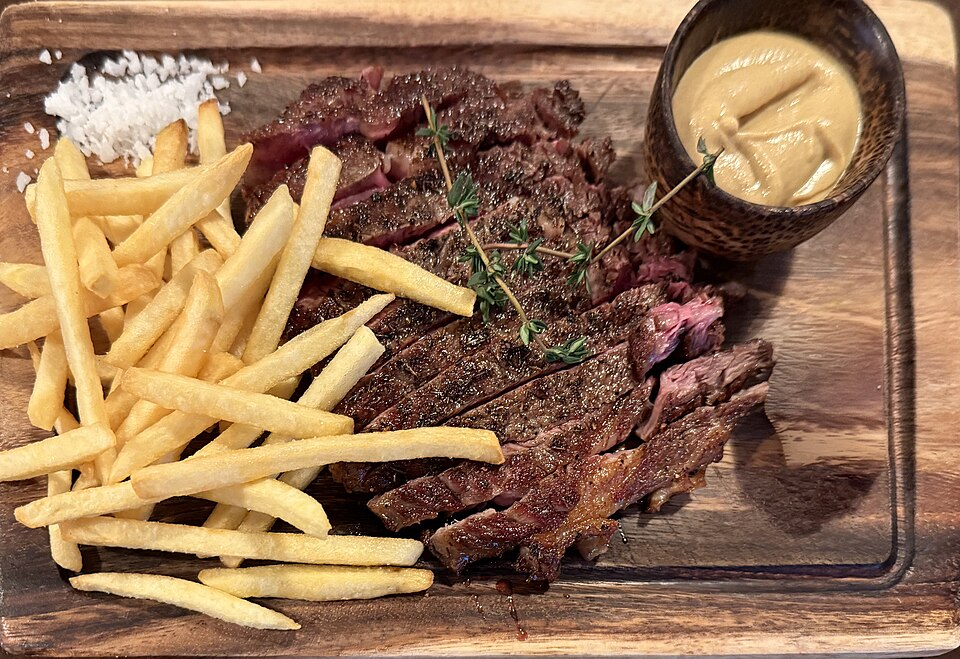

Steak Recipe

LuvsMG481,
CC BY-SA 4.0, via Wikimedia Commons
Ingredients
The Steak
- Ribeye or New York Strip Steak
- Salt
- Black Pepper
Aromatics and Basting
- Unsalted Butter
- Garlic Cloves
- Fresh Rosemary
- Fresh Thyme
Cooking Instructions:
Preparation
- Remove the steak from the refrigerator 30 minutes before cooking to bring it to room temperature.
- Pat the steak completely dry with paper towels on all sides.
- Season generously with salt and black pepper just before cooking.
Searing and Basting
- Heat a heavy cast-iron skillet over high heat until smoking hot, then add a splash of high-heat oil.
- Place the steak in the skillet and sear for 2 minutes without moving it to form a dark crust.
- Flip the steak and add the butter, garlic cloves, rosemary, and thyme to the pan.
- Tilt the pan slightly and spoon the melted butter continuously over the top of the steak for another 2 minutes.
Resting
- Remove the steak from the pan and place it onto a cutting board.
- Let the steak rest for 5 to 10 minutes to allow the juices to redistribute before slicing. Enjoy!
Back to Home
Links to other recipes:
Note:
This recipe may or may not end up tasting like dog shit, as I have never actually made it before, and I just asked
ChatGPT to generate a recipe for me.